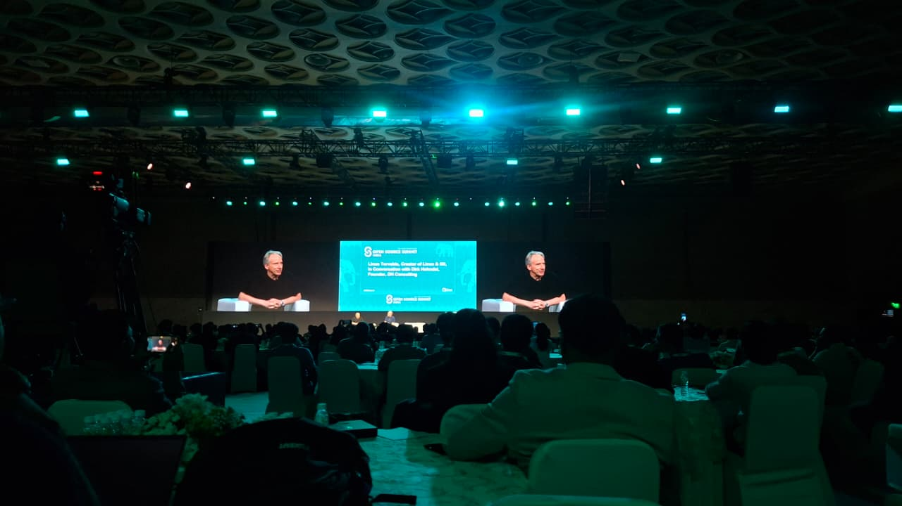

The Keynotes: Setting the Paradigm for Open Source in 2026

Recently, I had the opportunity to attend the Open Source Summit organized by the Linux Foundation. The energy in Bengaluru was electric, serving as a powerful reminder of how India is rapidly shifting from a primary consumer of open-source software to an engineering powerhouse defining global digital leadership. Over the course of two jam-packed days, the morning keynotes laid out a cohesive vision of where our industry is heading, highlighting major architectural shifts across infrastructure, security, and community-driven technology.
The absolute highlight of Day 1 was watching Linus Torvalds in conversation with Dirk Hohndel. Linus' take on open-source contributions, security, and cutting through the AI hype was incredibly grounding. While he openly admitted to using AI to generate the initial structural scaffolding and boilerplate logic for his own side projects to speed up micro-prototyping, he drew a firm, absolute boundary when it comes to critical, core systems: AI-generated Pull Requests directed at the Linux Kernel are strictly rejected. Autoregressive models lack true logical, semantic awareness, meaning human review, deterministic testing, and domain expertise remain the true gatekeepers of production systems.
Other keynotes expanded on these themes. Arpit Joshipura highlighted the explosion of upstream code contributions originating from India, moving from simple integrations to nation-scale Digital Public Infrastructure (DPI) like Digi Yatra and decentralized trust networks. On Day 2, Manish Dixit (SVP of Product at the Linux Foundation) argued that "the moat has moved from code to context." In an era of AI-generated boilerplate, application code itself is a commodity; the true competitive edge and security parameters lie in operational runtime data and data pipeline integrity. We also saw Greg Kroah-Hartman provide a thrilling update on Rust in the Linux Kernel, explaining how memory-safe driver design at compile-time is preventing entire classes of security vulnerabilities, and Roberto Luna-Rojas on AWS dissecting the industry's massive migration to Valkey to reclaim database efficiency.
To stitch these major themes together, it is useful to see how the foundations laid on Day 1 evolved directly into the engineering breakthroughs presented on Day 2:
| Core Theme | Day 1 Keynote Foundation | Day 2 Breakthrough Counterpart |
|---|---|---|
| Artificial Intelligence | Linus' warning against unverified, auto-generated PR slop. | Moving to open-weight governance and maximizing token efficiency. |
| Security & Architecture | Transitioning nation-scale architectures into audited public infrastructure. | Hardening the core kernel with Rust and utilizing Reachability Analysis. |
| Platform Efficiency | Intelligent platform-level guardrails and scaling configurations. | Bypassing legacy databases for Valkey and shifting to GraalVM Java. |
Day 1 Breakdowns: Performance, Security, & Cloud-Native Infrastructure
1. Performance-by-Design: Embedding Intelligent Scaling & Guardrails
Speakers: Josephine Eskaline Joyce & Tanya Shanker (IBM India)
Traditional platform engineering treats day-two scaling and cost efficiency as afterthoughts, causing environment sprawl. Platform teams can build automated ML scaling guardrails (using tools like KEDA) directly into internal portals to sustain absolute performance without skyrocketing cloud bills.
2. Security: Why it HAS to be Open Source
Speaker: Mike Bursell (Confidential Computing Expert)
Proprietary security tools require blind trust, leaving organizations vulnerable to hidden bugs or negligence. True zero-trust relies on auditable code and Confidential Computing hardware-isolated enclaves (like Intel SGX/AMD SEV) governed by verified open-source stacks like Enarx.
3. Decoding the Open-Source Blueprint for India’s Sovereign AI Future
Speakers: Vincent Caldeira (Red Hat) & Abhishek Kumar Singh (NxtGen Cloud Technologies)
Relying on public cloud LLM APIs risks data sovereignty. This talk laid out a localized infrastructure blueprint combining OpenStack, Kubernetes GPU orchestration, and high-throughput vLLM runtimes (utilizing PagedAttention) to serve open-weight models in secure, air-gapped environments.
4. CI/CD, APIs, and Scaling: Modern Cloud-Native Dev
Speakers: Aditya Soni (SailPoint) & Aditi Gupta (JioStar India)
Decentralized microservices introduce latency and CI/CD queue delays. Developers should leverage dynamic, cloud-native runner platforms (Tekton or Argo Workflows) that scale to zero post-build, coupled with rate-limiting API gateways and progressive canary delivery.
5. Recipes and Runtimes: Making Sense of Containers in 2026
Speaker: Soundarya Rangarajan (Canonical)
The container ecosystem has moved beyond a basic Docker daemon. Modern platforms require balancing low-level and high-level runtimes (runc/containerd), virtual-machine-grade sandboxing (Kata Containers, Firecracker MicroVMs), and ultra-lightweight WebAssembly (Wasm) edge runtimes.
6. How Kubernetes Networking Really Works: A Packet's Journey
Speakers: Ashwin Sriram (Deutsche Bank) & M Viswanath Sai (IIT BHU)
Kubernetes networking is notoriously complex to debug. Packet flow transitions from simple virtual ethernet pairs on a single host to encapsulated overlay networks across hosts, with modern platforms shifting to kernel-level eBPF routing (Cilium) to bypass slow iptables rules.
[Pod A Namespace] ──> (veth pair) ──> [Host Network Namespace] ──> [eBPF / CNI Routing] ──> [Physical Interface]// key learnings
- Platform Design: Automate predictive scaling using telemetry and KEDA to avoid resource sprawl and cut costs.
- Verifiable Security: Zero-trust demands absolute auditability; open-source code and Confidential Computing (Intel SGX/AMD SEV) are non-negotiable.
- Sovereign Infrastructure: Localize AI strategies using OpenStack, Kubernetes GPU orchestration, and high-throughput vLLM runtimes.
- Infrastructure Observability: Shift Kubernetes networking from slow iptables routing to kernel-level eBPF for near-native speeds.
"AI-generated PRs directed at core systems like the Linux Kernel are strictly rejected. AI lacks logical, semantic awareness and verification capabilities, meaning human review, deterministic testing, and domain expertise remain the true gatekeepers of production software." — Linus Torvalds, Open Source Summit India 2026
Day 2 Keynotes: The Moat Has Moved — Context, Languages & Performance
Day 2 opened with a sharp reframe from Manish Dixit (Linux Foundation) — when LLMs can generate boilerplate on demand, code itself is no longer the moat; your operational runtime context and data pipeline integrity are. Aayush Bhatnagar (Jio Platforms) extended this into telecom, showing how 6G and AI-native routing are converging on cloud-native open architectures that handle dynamic packet scaling without proprietary lock-in. Roberto Luna-Rojas (AWS) made the cost case for Valkey — ditching restrictive licensing and channelling those savings back into product. Geeta Gurnani (IBM India) pushed for governed AI over black-box endpoints, arguing that open weights, data lineage, and auditable pipelines are the only path to trustworthy enterprise outcomes. Greg Kroah-Hartman closed with the most technically satisfying update of the day — Rust's compile-time memory safety is steadily eliminating entire bug classes from the Linux kernel, making buffer overflows and use-after-free errors a problem of the past.
Day 2 Breakdowns: AI Fuzzing, CVE Reachability, & Smart Code Verification
1. Breaking Valkey on Purpose: Chaos Fuzzing with Agentic AI
Speaker: Renuka Uttarala (Amazon)
Brute-force fuzzing struggles to identify deep race conditions in high-performance stores like Valkey. By integrating autonomous AI agents that monitor code coverage and memory usage in real-time, teams can dynamically generate valid API mutations to stress test hidden edge cases.
2. Pruning Kernel CVEs with Code Reachability Analysis
Speakers: Ashish Bijlani (Ossillate Inc.) & Chandni B (Independent Contributor)
Security teams waste hundreds of hours patching unused drivers. By using reachability analysis to map whether a vulnerable function within a kernel module can actually be triggered by user-space workloads, organizations can eliminate up to 70% of security patch alert fatigue.
3. Jakarta EE/Java: Hyper-Performance and Efficiency
Speaker: Daniel Oh (IBM)
Java's startup footprint is optimized for modern serverless clusters using native Ahead-of-Time (AOT) compilation (GraalVM and Quarkus) and CRaC (Coordinated Restore at Checkpoint). This drops startup latency from seconds down to milliseconds.
4. The Process of Exploration in AI Research: A Researcher's Perspective
Speaker: Bibekananda Hati (Experquick.org)
Treating AI adoption as a standard software sprint leads to brittle integrations. Engineering cultures must instead embrace an experimental research lifestyle, setting up local evaluation loops (Eval pipelines) to benchmark models against specific business logic.
5. Confidently Wrong: When AI Cannot Catch Its Own Bugs
Speaker: Shailja Thakur (IBM Research Bangalore)
LLMs excel at generating code but lack semantic awareness, meaning they often fail to recognize their own logical bugs. Software pipelines must rely on deterministic static analysis tools (SonarQube, Semgrep) and human expertise rather than LLM intuition.
6. Writing for Machines: How to Capture Your Project’s Vibe and Survive AI Slop
Speakers: Kaushlendra Pratap Singh & Shaheem Azmal M (Siemens)
To survive the deluge of AI slop, documentation must be scannable, structured, and context-rich for RAG embedders, while preserving the project's unique voice, prerequisites, and real-world edge cases for human developers.
7. JSON Wastes 60% of Your AI LLM Tokens — Toon Fixes That
Speaker: Vitthal Mirji
JSON's verbose syntax consumes a significant percentage of LLM token limits, driving up cost and latency. Serializing structured outputs via **Toon** (a hyper-lean format optimized for models) slashes data payload overhead and token consumption by up to 60%.
The Exhibition Floor: Booth Highlights & Micro-Demos
Beyond the formal sessions, the exhibition floor was packed with interactive booths and engaging discussions with engineering teams. Some standout highlights from my conversations include:
- NPCI (National Payments Corporation of India): Had a fascinating conversation about how their open-source infrastructure handles millions of concurrent UPI payment requests daily in a highly secure manner with extreme consistency.
- GraphQL: Explored the journey of GraphQL, looking at how it evolved from a simple internal data fetching requirement at Meta to a global open-source project powering APIs across modern industries.
- NudgeBee: Got a demo of NudgeBee, an AI assistant and AIOps automation builder for SRE, CloudOps, and support teams — built to automate incident response, runbooks, and operational workflows.
- Valkey: Dived into the active community booth of Valkey, learning about its enhanced multi-threaded I/O model, memory optimizations, and built-in modules like ValkeyBloom, vector similarity search, and full-text search (FTS) that are accelerating its adoption in major enterprises.